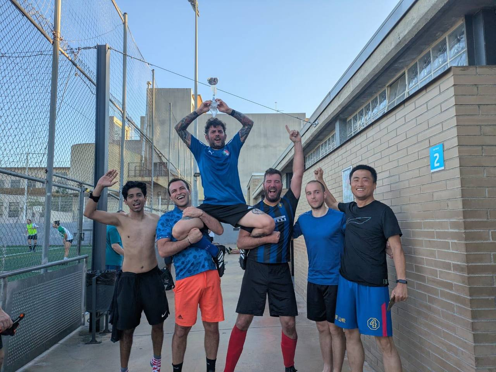
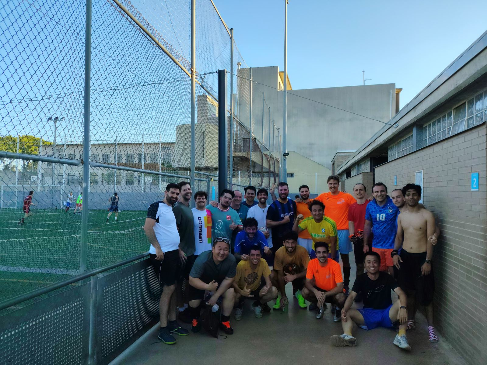

Última actualización:
| Jugador | Radar | Ataque | Defensa | Táctica | Estamina | Asistencia | Puntualidad | Balance | Media | FIFA | Stars | Curiosidades |
|---|
Seleccionados: 0
Seleccionados: 0
Sin jugadores seleccionados.
Sin jugadores seleccionados.

GANADORES

JUGADORES